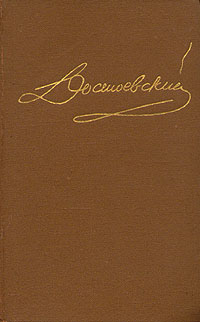

1
Книга первая. История одной семейки
Рассказчик знакомит с Фёдором Павловичем Карамазовым, его двумя браками и тремя сыновьями. Младший, Алёша, приходит в монастырь к старцу Зосиме.
Истинно, истинно говорю вам: если пшеничное зерно, падши в землю, не умрет, то останется одно; а если умрет, то принесет много плода.Евангелие от Иоанна, гл. XII, ст. 24

Полное издание частей первой, второй и третьей романа: 9 книг, 62 главы и «От автора». К тексту прилагаются переводы иностранных фраз и справки к реалиям — они открываются по клику на номер примечания. Сайт работает без интернета, ничего не загружает со стороны.
Рассказчик знакомит с Фёдором Павловичем Карамазовым, его двумя браками и тремя сыновьями. Младший, Алёша, приходит в монастырь к старцу Зосиме.
Семья собирается в келье старца Зосимы, чтобы уладить спор о наследстве между Дмитрием и отцом. Встреча оборачивается скандалом.
Алёша в доме отца. Исповеди Мити, история Лизаветы Смердящей и появление Смердякова; ссора отца и старшего сына из-за Грушеньки.
Алёша выполняет поручения: дом госпожи Хохлаковой, Катерина Ивановна, Лиза, штабс-капитан Снегирёв и его семья.
Разговор Ивана и Алёши в трактире «Столичный город»: «Бунт», поэма о Великом инквизиторе. Иван и Смердяков.
Старец Зосима и его гости; жизнеописание Зосимы и его беседы и поучения.
Смерть старца Зосимы и то, что случилось после неё. Алёша, Ракитин и Грушенька; Кана Галилейская.
Митя ищет деньги, чтобы расплатиться с Катериной Ивановной и добиться Грушеньки; поездка в Мокрое и ночь в Мокром.
Следствие по делу: допрос Мити, показания свидетелей и мытарства подсудимого.